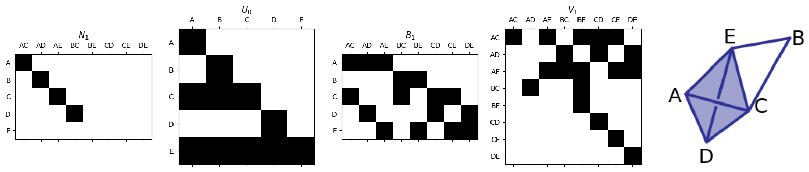
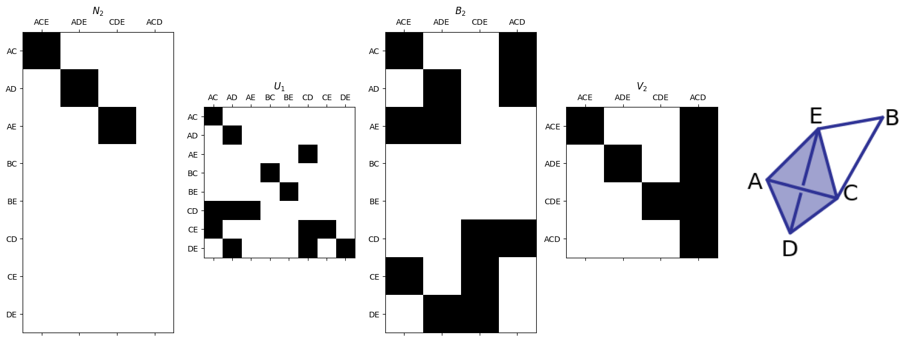

Solution for last example#
From the end of Lecture 7.
import smith
import pandas as pd
import matplotlib.pyplot as plt
import numpy as np
from smith import plotFirstSetOfMatrices, plotSecondSetOfMatrices
For the following example (the tetrahedron is empty):

What are the boundary matrices \(\partial_0\), \(\partial_1\), and \(\partial_2\)?
Use the
smithpackage to get the smith normal form of each.Fill out the table below to determine the Betti numbers.
Give representatives for each of the homology classes.
vertex_list = ['A','B','C','D','E']
edge_list = ['AC','AD','AE','BC','BE','CD','CE','DE']
triangle_list = ['ACE','ADE','CDE','ACD']
# B1
B1_df = pd.DataFrame(0,index=vertex_list, columns= edge_list)
for edge in B1_df.columns:
B1_df.loc[edge[0], edge] = 1
B1_df.loc[edge[1], edge] = 1
B1 = np.array(B1_df)
B1_df
| AC | AD | AE | BC | BE | CD | CE | DE | |
|---|---|---|---|---|---|---|---|---|
| A | 1 | 1 | 1 | 0 | 0 | 0 | 0 | 0 |
| B | 0 | 0 | 0 | 1 | 1 | 0 | 0 | 0 |
| C | 1 | 0 | 0 | 1 | 0 | 1 | 1 | 0 |
| D | 0 | 1 | 0 | 0 | 0 | 1 | 0 | 1 |
| E | 0 | 0 | 1 | 0 | 1 | 0 | 1 | 1 |
N1,U0,V1= smith.smith_form(B1)
plotFirstSetOfMatrices(N1,U0,B1,V1,edge_list,vertex_list,'SimplexExamples_3.png')

# B2
B2_df = pd.DataFrame(0,index=edge_list, columns= triangle_list)
for tri in B2_df.columns:
B2_df.loc[tri[:2],tri] = 1
B2_df.loc[tri[0]+tri[2],tri] = 1
B2_df.loc[tri[1:],tri] = 1
B2 = np.array(B2_df)
B2_df
| ACE | ADE | CDE | ACD | |
|---|---|---|---|---|
| AC | 1 | 0 | 0 | 1 |
| AD | 0 | 1 | 0 | 1 |
| AE | 1 | 1 | 0 | 0 |
| BC | 0 | 0 | 0 | 0 |
| BE | 0 | 0 | 0 | 0 |
| CD | 0 | 0 | 1 | 1 |
| CE | 1 | 0 | 1 | 0 |
| DE | 0 | 1 | 1 | 0 |
N2,U1,V2= smith.smith_form(B2)
plotSecondSetOfMatrices(N2,U1,B2,V2,edge_list,triangle_list,'SimplexExamples_3.png')

\(c_p\) |
\(z_p\) |
\(b_p\) |
\(\beta_p = z_p - b_p\) |
|
|---|---|---|---|---|
\(p=0\) |
5 |
5 |
4 |
1 |
\(p=1\) |
8 |
4 |
3 |
1 |
\(p=2\) |
4 |
1 |
0 |
1 |
Generators#
\(p=0\)#
For \(p=0\), we just have one connected component so you can use the representative [A] or any choice of vertices, so I’m just going to skip \(p=0\).
\(p=1\)#
To get the generators of the kernel, we need the last \(z_p\) columns of \(V_p\). The 1’s correspond to the entry in the edge list in the sorted order at the top.
zp = 4
print('Edges:', edge_list)
alpha1 = V1[:, -zp]
alpha2 = V1[:, -zp+1]
alpha3 = V1[:, -zp+2]
alpha4 = V1[:, -zp+3]
print(alpha1)
print(alpha2)
print(alpha3)
print(alpha4)
print('\nEdge lists for each generator of the kernel:')
print('alpha1 edges:', [edge_list[i] for i in range(len(edge_list)) if alpha1[i] == 1])
print('alpha2 edges:', [edge_list[i] for i in range(len(edge_list)) if alpha2[i] == 1])
print('alpha3 edges:', [edge_list[i] for i in range(len(edge_list)) if alpha3[i] == 1])
print('alpha4 edges:', [edge_list[i] for i in range(len(edge_list)) if alpha4[i] == 1])
Edges: ['AC', 'AD', 'AE', 'BC', 'BE', 'CD', 'CE', 'DE']
[1 0 1 1 1 0 0 0]
[1 1 0 0 0 1 0 0]
[1 0 1 0 0 0 1 0]
[0 1 1 0 0 0 0 1]
Edge lists for each generator of the kernel:
alpha1 edges: ['AC', 'AE', 'BC', 'BE']
alpha2 edges: ['AC', 'AD', 'CD']
alpha3 edges: ['AC', 'AE', 'CE']
alpha4 edges: ['AD', 'AE', 'DE']
To get generators of the image, we need the first \(b_p\) columns of \(U_p^{-1}\).
b1 = 3
U1inv = np.linalg.inv(U1)
# U1inv mod 2
U1inv = U1inv.astype(int) % 2
U1inv
print('Edges:', edge_list)
beta1 = U1inv[:, 0]
beta2 = U1inv[:, 1]
beta3 = U1inv[:, 2]
print('beta1:', beta1)
print('beta2:', beta2)
print('beta3:', beta3)
print('Same thing but as lists of edges:')
print('beta1 edges:', [edge_list[i] for i in range(len(edge_list)) if beta1[i] == 1])
print('beta2 edges:', [edge_list[i] for i in range(len(edge_list)) if beta2[i] == 1])
print('beta3 edges:', [edge_list[i] for i in range(len(edge_list)) if beta3[i] == 1])
Edges: ['AC', 'AD', 'AE', 'BC', 'BE', 'CD', 'CE', 'DE']
beta1: [1 0 1 0 0 0 1 0]
beta2: [0 1 1 0 0 0 0 1]
beta3: [0 0 0 0 0 1 1 1]
Same thing but as lists of edges:
beta1 edges: ['AC', 'AE', 'CE']
beta2 edges: ['AD', 'AE', 'DE']
beta3 edges: ['CD', 'CE', 'DE']
The brute force gets awful here since you’d want to list off \(\alpha_i + a_1 \beta_1 + a_2 \beta_2 + a_3 \beta_3\) for every choice of \(a_1, a_2, a_3\) being 0 or 1. So let’s try to do this intelligently instead since we’ll have better options for finding representatives later. We’ll do this by just figuring out which of our classes actually contain 0 - Since we know that the dimension of homology must be 1, exactly 1 class should be non-zero.
First off, since alpha3 = beta1 and alpha4 = beta2, we know that both [alpha3] = 0 and [alpha4] = 0.
print('alpha3:', [edge_list[i] for i in range(len(edge_list)) if alpha3[i] == 1])
print('beta1:', [edge_list[i] for i in range(len(edge_list)) if beta1[i] == 1])
print('\n')
print('alpha4:', [edge_list[i] for i in range(len(edge_list)) if alpha4[i] == 1])
print('beta2:', [edge_list[i] for i in range(len(edge_list)) if beta2[i] == 1])
alpha3: ['AC', 'AE', 'CE']
beta1: ['AC', 'AE', 'CE']
alpha4: ['AD', 'AE', 'DE']
beta2: ['AD', 'AE', 'DE']
We know from earlier that beta1 + beta2 + beta3 = AC + AD + CD, and this happens to be the same as alpha2:
# Note we get the last triangle on the tetrahedron from the sum of the other three
out = (beta1 + beta2 + beta3 ) % 2
print('beta1 + beta2 + beta3:', [edge_list[i] for i in range(len(edge_list)) if out[i] == 1])
print('alpha2:', [edge_list[i] for i in range(len(edge_list)) if alpha2[i] == 1])
beta1 + beta2 + beta3: ['AC', 'AD', 'CD']
alpha2: ['AC', 'AD', 'CD']
So that means that [alpha2] = 0. The only remaining class is alpha1, so we know that the homology is generated by [ AC + AE + BC + BE ]
\(p=2\)#
This one’s easy at least! There’s only one generator of \(Z_2\) (cycles) and none for \(B_2\) (boundaries), so we know the only cycle generator is the generator of the homology. This can be found in the last column of \(V_2\).
print('Triangles:', triangle_list)
print(V2[:, -1])
Triangles: ['ACE', 'ADE', 'CDE', 'ACD']
[1 1 1 1]
So the 2-dimensional homology is given by [ACE+ADE+CDE+ACD].